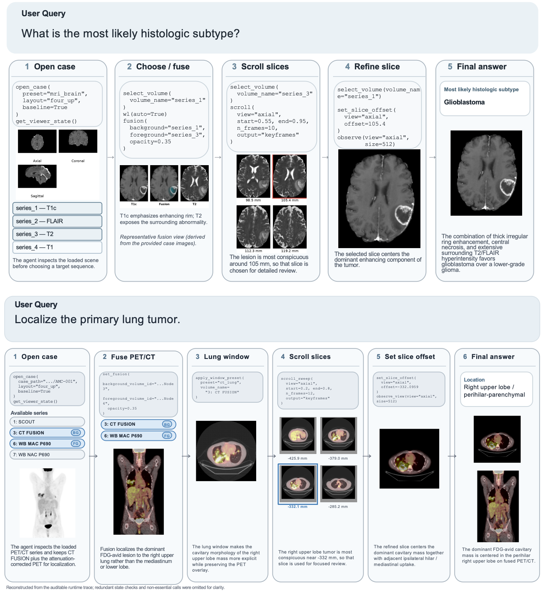

Main Demo
Brain Tumor Localization and Differentiation
Study-level inspection for tumor localization together with differentiation across the relevant imaging evidence.
Project
Auditable Medical Imaging Agents Reasoning over Uncurated Full Studies
MedOpenClaw studies medical-imaging agents over uncurated full studies, exposing navigation, evidence gathering, longitudinal comparison, view selection, and failure behavior as auditable runtime traces.
Main Figure

Qualitative Demos
Main Demo
Study-level inspection for tumor localization together with differentiation across the relevant imaging evidence.
Demo 02
Before-versus-after comparison for longitudinal change, centered on tumor size and study-to-study evolution.
Demo 03
A focused viewer-control example where the agent adjusts the view to the slice or perspective that makes the tumor most evident.
Demo 04
An explicit failure case that makes segmentation breakdowns visible instead of hiding them behind a final prediction.
Representative Trace

Citation
@misc{shen2026medopenclawauditablemedicalimaging,
title={MedOpenClaw: Auditable Medical Imaging Agents Reasoning over Uncurated Full Studies},
author={Weixiang Shen and Yanzhu Hu and Che Liu and Junde Wu and Jiayuan Zhu and Chengzhi Shen and Min Xu and Yueming Jin and Benedikt Wiestler and Daniel Rueckert and Jiazhen Pan},
year={2026},
eprint={2603.24649},
archivePrefix={arXiv},
primaryClass={cs.CV},
url={https://arxiv.org/abs/2603.24649},
}